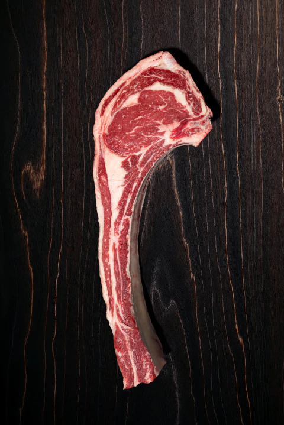

Tomahawk
$35.000/kg
El Tomahawk es el corte que impone respeto. Es un bife ancho con
hueso de costilla de 30cm+ que parece sacado de una película.
Imponente, marmolado y 100% show en la parrilla.
Nuestro
Tomahawk es de 400kg+, con 28 días de de maduración. Viene con un
hueso francés limpio y una cobertura de grasa que lo protege.
Adentro tiene un marmolado que se derrite y lo hace ultra jugoso.
Caracteristicas:
.Sabor: Potente y mantecoso. Por el hueso y la grasa imtramuscular tiene un gusto que no se parece a ningún otro corte
.Textura: Muy tierno y fibroso.
.Peso: Piezas de 1.2kg a 1.8kg aprox. Rinde 2 a 3 personas bien comidas.
.Ideal para: Parrilla a fuego indirecto primero, y sellado final a fuego fuerte. Sal parrillera y pimienta, es el protagonista de la noche.
"Es el corte perfectopara sorprender. Queda brutal con chimichurri de ajo y romero. Marida con un Cabernet Sauvignon."
Opiniones de Clientes
"El mejor regalo para un carnívoro. Pedí uno de 1.5kg y comimos 3. Se desarma solo. Viene muy bien presentado y sellado al vacío. La reserva no falla." - Camila F. - San Miguel de Tucumán
"Lo compre para el día del padre. Fue un espectáculo. Lo hicimos a 2 fuegos y el hueso le da un sabor único. Impresiona cuando lo sacas a la mesa. Todos sacaron fotos and¿tes de comerlo jaja." - Gonzalo M. - Yerba Buena.
"El Tomahawk de acá es el más parejo que conseguí. Buen marmolado, buen hueso. Al punto justo queda rosado ppor dentro y crocante por fuera. 10/10" - Ricardo T. Banda de Rio Sali.